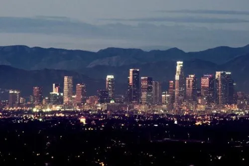

TurismoON: una página para tu paraíso
1-Las Vegas
Ciudad de Las Vegas, o la ciudad de del Pecado, es uno de los sitios turísticos de los Estado Unidos y se halla en el desierto de Mojave, estado de Nevada. Llegar allí desde Nueva York, requiere que tomes un avión y vueles hasta el estado Nevada por más de seis horas al aeropuerto Internacional McCarran.
Todo en Las Vegas se halla abarrotado de edificios vistosos, lo que lo convierte en un área urbana perfecta para realizar viajes. Si tu viaje es para conocer casinos hermosos, no debes dejar de visitar la Calle Strip, a 20 minutos del centro. Esta calle tiene los casinos más geniales del mundo y de noche ofrece un espectáculo de luces que te va a emocionar mucho.
Es común la realización de espectáculos en las fuentes del boulevard, ya que recrean las escenas más emblemáticas de clásicas películas de Hollywood como Titanic. La Fuente de Bellagio es la más famosa debido a estos cortos teatrales y hacer fotos allí te va a dar recuerdos muy bonitos de tus vacaciones.
Las Vegas tiene como sorpresa una increíble cantidad de restaurantes y pubs para que elijas donde quieres comer, muchos famosos han edificado restaurantes gourmet con decoraciones maravillosas que son un atractivo. “The Capital Grille” es un sitio familiar que se especializa en comidas saludables, hechas a la parrilla. Se ubican en la Calle Principal y prometen servir la más rica carne del mundo.
2-Los Angeles
Los Ángeles es la ciudad principal del estado de California en los Estados Unidos y es conocida por sus rascacielos inmensos y su industria cinematográfica de alcance mundial. Llegar a los Ángeles desde cualquier destino mundial requiere que tomes un avión y hagas un recorrido hasta el Aeropuerto de Los Ángeles, que es de los más enormes en territorio norteamericano.
En Los Ángeles se ubican varios de los destinos turísticos más emblemáticos de todo el mundo como el famoso Hollywood Sing. La visita a Hollywood es perfecta para toda la familia porque ofrece recorridos guiados por estudios de filmación. Lo más atarctivo es que se puede ver el letrero de Hollywood en el monte Lee, en el que tomar fotos es imperdible.
El ambiente tiene parques acuáticos que son enormes y bellos como El Parque Santa Mónica, a dos horas del centro de Los Ángeles. El parque tiene toboganes de agua de muchos metros de altura y una rueda de la fortuna que tiene vista al valle. Es uno de los lugares turísticos en Estados Unidos para visitar con niños porque es uno de los Parques que garantiza diversión al aire libre sin salir del urbanismo.
Visitar Los Ángeles te va a llevar unos cuantos días, de modo que si quieres quedarte, puedes optar por un hotel lindo en una agradable locación céntrica. “El Hotel Sheraton” es de los más lujosos y tradicionales en Estados Unidos y te va a encantar quedarte allí por el servicio de piscina y WIFI que promete hacerte sentir como en casa.
3-Chicago
Chicago es una fantástica locación que es parte del estado de Ilinois, en los Estados Unidos. Es reconocida por las antiguas construcciones urbanas y por sus pronunciadas carreteras. Llegar a Chicago desde locaciones cercanas como Naperville o Evanston es sencillo si se toma un vuelo desde la local Aerolínea Americana, pues el recorrido no pasa de los 45 minutos.
En lo que llegues a la ciudad debes ir a tomarte una foto en el Cloud Gate o La Alubia. Es una escultura plateada que se encuentra en el Millenium Park, zona central de Chicago. Te vas a dar cuenta que el monumento es un ícono del arte moderno y apreciarlo con tanta tranquilidad, es perfecto para tu visita.
Si eres amante de los planetas y las estrellas te va a gustar saber que Chicago tiene un Planetario de belleza impactante. Se llama Adler Planetarium y es el primero de su clase en territorio americano. El sitio tiene exposiciones geniales donde se pueden tocar rocas de la luna y aprender acerca de los planetas en un ambiente bonito e interesante.
Es recomendable terminar tu aventura en Chicago probando las inigualables Donuts de Chicago que venden en la cadena de comida rápida, Stan´s. El local principal se halla en la zona del Milleniun y vas a encontrar donuts glaseadas con muchos sabores y perfectos para acompañar una malteada.
Página creada por Sergio Delgado
Urbe 2020
Urbe 2020